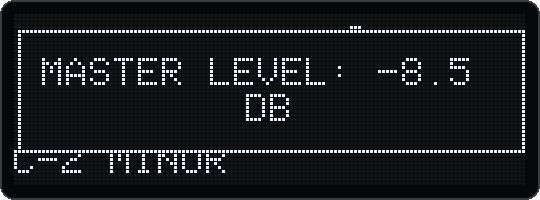

v18 reworks how a sound moves through the filters, the EQ and the volume stages. Every change now glides sample by sample, nothing steps or clicks, and the level controls speak dB. v18.2 and v18.3 fix what the first v18 missed. The reverb and the delay were reworked earlier, in v10, v11 and v14.
5.1 The signal path
The path of a sound, simplified, and what changed on the way. Volume, pan and sidechain share one ramp that moves per sample. The drone joins after the song effects.
5.2 Filters without rustle, steps and clicks v18
Change
What you hear
No rustle at low cutoff
The ladder filters (12 dB, 24 dB, Drive) carried a deliberate "analog noise" on their cutoff, already in the original firmware: 0.44% of fluctuation, audible as a band of noise around every note. It is gone.
Silence after the music
Below 4.5 kHz the ladder computes with more precision. When the music stops, the filter really goes silent.
Resonance at low cutoff as in the original
Below about 310 Hz, the 12 and 24 dB ladders lower their resonance again by up to 9%, and song, kit and track filters saturate as in the original. Self-oscillation there is 6 dB quieter, and the hum at 32 Hz (for example in "New Sitar Grii 10") disappears.
Per sample, not per block
Cutoff, resonance, morph and the level compensation move sample by sample. Large jumps pass through real intermediate settings. The zipper noise drops by 7 to 72 dB, depending on the filter. A filter that stands still computes bit for bit as in v17.
10 ms glide
Every new filter value glides over 10 ms, wherever it comes from: knob, automation, MIDI or patch cable, in voices and in song, kit and track filters. Before, only the knob in synths glided.
Crossfades
7 ms when you change the mode or the routing and when you switch a filter off; a linear fade-in when you switch it on. The clicks drop from up to 254 times to 1.7 times the normal step between two samples.
Fresh voice state
A new note inherits nothing from the previous one.
After a silence v18.2
A kit or audio track that comes back in after a pause starts right away with its current filter, EQ and volume. v18 still ran old movements over the first milliseconds: a short tick or a brighter attack. If you installed v18, take v18.3.
Parallel routing is 6 dB quieter. With routing Parallel, a filter that is switched off no longer adds dry signal, and the sum of both filters has half the volume (−6 dB). Songs with this routing therefore play 6 dB quieter than before v18. Raise their volume if you miss the level.
5.3 Resonance and self-oscillation
The filters can still sing by themselves at high resonance, as in 1.2.1 and in the original firmware. The firmware does not limit the resonance.
HPF whistlev17: with a lot of resonance the HP ladder self-oscillates. Since the community's filter rework it limited 12–18 dB higher than the original firmware; in the song master that gave a whistle up to 27 dB above the music. It now limits like the original again: about 17 dB quieter in song, kit and track, about 12 dB in synths. The tone is not completely gone; it sits at about the level of the music. Below about 39% HPF resonance the sound is bit for bit the same as before.
24 dB ladder: it self-oscillates flat, as in 1.2.1: −19 cents at 600 Hz, −52 at 1.9 kHz, −127 from 5.7 kHz. The 12 dB ladder hits the pitch.
Drive LPF: it self-oscillates from about 50% resonance, at around 9–21 kHz, as in 1.2.1. Below the oversampling threshold its tone is 56 cents flat at 2 kHz (§5.4).
Example: "the LPF has no effect". In one song the song LPF's resonance was at maximum. From about 36 on the cutoff knob, the filter oscillated by itself, about 10 dB above the music, and its tone followed the knob down. Fix: in song view, with the filter button on LPF, turn the lower gold knob (resonance) below about 35, then save. To delete an automation of the filter as well, hold SHIFT and press the upper gold knob ("Automation deleted"); without SHIFT the press changes the filter type.
5.4 Drive v18, v18.3
The bass stays: with resonance, Drive now loses at most 0.53 dB of bass. Before v18 it lost up to 13 dB.
Real 2× oversampling with half-band filters: the mirror images drop to −88 dB. 1.2.1 only doubled samples.
Only where it mattersv18.3: Drive oversamples where 1.2.1 did, high up with resonance. There, resonance and saturation would otherwise alias audibly.
Switching is crossfaded. A little hysteresis keeps an LFO that moves around the threshold from switching back and forth.
Under load the oversampling switches off, as in 1.2.1.
Where Drive runs 2× oversampled in v18.3: the same place as in 1.2.1. The two points and the limit at resonance 15 are from the tests; the lines between and beyond them only guide the eye.
Why v18.3 changed it. v18 oversampled Drive at every setting. A song with many Drive filters then needed 3.5 times real time at the start of the bar (1.2.1: 1.7 times) and lost almost all its voices before the load protection could step in. In the stress test with every LPF on Drive, v18 kept 6 voices on average, v18.3 keeps 15 and v17 kept 20. The price: below the threshold Drive self-oscillates as in 1.2.1 again, 56 cents flat at 2 kHz (v18: 30 cents).
Drive's half-band filter delays the signal by 2.3 samples. In a parallel sum with Drive this is not compensated.
5.5 Filter crossing guard v18
Settings → Community features → Filter crossing guard (7-segment CROS), off by default. When the HPF and the LPF come close or cross, it lowers both resonances smoothly, so their peaks don't add up to a painful jump in level.
HPF position
Combined peak, with the guard
Without
less than half an octave below the LPF, or above it
at most 0.7 dB above the larger single peak
up to 39 dB
half an octave to an octave and a half below
at most 1.7 dB
It starts acting from two octaves apart. A self-oscillating ladder stops singing at the crossing.
Less resonance raises the passband slightly. In single cases (LP12 with the SVF as HPF) the overall level can rise by up to 3 dB.
5.6 EQ with real shelves v18
Bass and treble are now real shelving filters instead of one-pole crossovers. The knobs and the corner frequencies stay: 199 Hz and 2.8 kHz.
The noise floor drops from −77 to −141 dBFS. Clicks when you turn drop from −24 to −70 dBc.
Set to neutral, the EQ passes the signal through bit for bit.
With both bands in use it needs twice as much CPU as before.
5.7 Volume in dB v18
Every detent is 0.5 dB, in the menus and on the gold knobs. The display shows dB: "−3.5 dB" on the OLED, -3.5 on the 7-segment display, OFF at the very bottom.
Songs are saved as before. They sound equally loud and still load in v17. Their values simply lie between the old positions 0–50.

The song's volume knob: master level −8.5 dB.
Where the old values 0–50 lie in dB. Each blue tick is one detent of 0.5 dB, drawn from −30 dB up. Low down, one old step spans several dB; high up it spans less than one.
One ramp for everything: sound, kit row, kit, audio track and song ramp volume × pan × sidechain × filter compensation per sample, exactly onto the target. A jump of more than 6 dB takes at least 5 ms, also from automation and when several parameters change at once.
So the sidechain also ducks over at least 5 ms. Very hard pumping effects in old songs sound a bit softer.
More precise: quiet settings no longer lose resolution. The level before the filters stays as in v17, so turning up doesn't change how much they saturate.
Old value
20
25
30
35
40
45
50
Synth, kit row (default 40)
−3.9
0.0
+3.2
+5.8
+8.2
+10.2
+12.0
Song, kit, audio track (default 35)
−9.9
−6.0
−2.9
−0.2
+2.1
+4.2
+6.0
In dB as the display shows it. From one value a to another b the level changes by 40·log10(b/a) dB. A kit also has a fixed +1.9 dB as compensation for the filter resonance.
5.8 Levels, headroom and the output limiter
No volume control in the Deluge distorts by itself: each is a pure multiplication in 32 bits with over 30 dB of headroom. Only the sum at the output clips, hard at 0 dBFS, the same on headphones, line out, USB and resampling. You hear it first on the track you are turning up.
The VU meter shows the mean, not the peaks. It can already clip while the meter shows yellow. The only official target: not above the 3rd pad from the top (−4.5).
A baseline from the level analysis of real songs; there is no official one:
What
Suggested value
Song volume
35 to start, then down until the peak lies at −6 dBFS. Turning down in 32 bits costs no quality.
Kit, audio track
At most 35.
Synth, kit row
40 as the upper limit for loud things like kick and bass; 45–50 only for quiet samples.
Master compressor
Off. Switched on, it makes up its reduction with make-up gain, so it creates no headroom.
Peak
At most −6 dBFS. In DelugeRec the pad at −3 stays dark (§8.2).
VOLUME knob
Any. It is analog, after the converter, and doesn't act on USB and resampling.
DelugeBaseline checks all songs of a card against this baseline and can set them to it (§8.4).
Output limiterv18: Settings → Community features → Output limiter (7-segment LIMT), off by default. A peak limiter that looks ahead 0.7 ms and sets in softly 1 dB below full scale, without aliasing. It acts only where the output would otherwise clip hard.
When it is on, the output comes 0.7 ms later. When you switch it on or off, the output jumps once by this time, which can click briefly.
When it is off, everything stays bit for bit the same.
5.9 Sidechain v3, v18
No click when ducking. In 1.2.1 the volume ramp of each buffer started at the new value and overshot; with more than 6 dB of ducking within one buffer, the gain even flipped polarity. Now the ramp runs from the old to the new value, and the reverb return follows smoothly. The bug is also in the current community firmware.
At least 5 ms for jumps over 6 dB since v18 (§5.7).
The song's reverb sidechain keeps its sync levelv18.3. Since 1.2.1 it slipped one step lower at every save and load. Existing songs load with the saved value.
5.10 Reverb v10, v14
All settings are in the reverb menu as before, for the song and in every sound.
Setting
Models
Values and effect
Model → Digital (DIGI)
new
A plate after Jon Dattorro (1997), built like the Lexicon 224: dense and smooth, without metallic ringing. As loud as Mutable (within 0.5 dB), so switching the model doesn't jump in volume.
Room size
Digital
The time: 0 ≈ 0.6 s, 30 (default) ≈ 4.5 s, 45 ≈ 18 s, 50 almost endless.
Width
Digital
Stereo width, 0 = mono.
Damping
Mutable, Digital
0 bright, 50 dark, stepless. On Mutable it ran backwards in 1.2.1. Songs sound the same; only the number shown is now 50 minus the old one (default 36 → 14).
HPF
Mutable, Digital
Repaired: 0 = 20 Hz, 25 = 190 Hz, 50 = 540 Hz, saved and loaded with the song. Old songs load with the frequency they really had (old 50 → new 12).
LPF
Mutable, Digital
New: 0 = 500 Hz, 25 = 3.2 kHz, 49 = 18.6 kHz, 50 = off (default). It darkens the whole reverb; damping darkens the tail more and more over time.
Modulation v14
Mutable, Digital
0–50, default 0. At 0 the reverb stands still: a held tone stays steady in it. 50 sounds like v10 to v13, with the slow movement that fluctuated up to about 16 dB in level and some cents in pitch.
Pre-delay v14
all
0–100 ms, default 0. The reverb starts later, and the dry sound stands on its own first.
Mutable at Modulation 50 moves at the speed of the original Mutable Instruments modules (about 0.45 and 0.28 Hz). 1.2.1 ran it 16 times slower, almost static.
Freeverb: with width below the maximum the right channel was louder (by 3.6 dB at width 0); now balanced. A long, loud reverb no longer wraps around with a loud click. Freeverb has no HPF, LPF or modulation.
Against muddiness: 10–30 ms of pre-delay make the reverb much clearer without sounding detached. HPF at about 25 (190 Hz) takes the bass out of the reverb. A bit more damping darkens the tail. Without modulation the highs ring a bit longer on Mutable; raise damping a few steps if that is too bright.
Old songs sound stiller: songs without these settings load with Modulation 0 and no pre-delay. Set Modulation to 50 for the old sound.
Digital needs about a third more CPU than Mutable, computed once for the whole song.
A song saved with Digital plays without reverb in 1.2.1.
5.11 Delay v11, v14
For sounds, kits, audio tracks and the song. Two new menu items:
Time change (after Type) v14: Fade (default) or Tape.
LPF and HPF in the feedback (after Sync) v11: each repeat gets darker or thinner than the one before, as with tape and bucket-brigade delays. LPF: 0 = 500 Hz, 25 = 3.2 kHz, 49 = 18.6 kHz, 50 = off (default). HPF: 0 = off (default), 1 = 25 Hz, 25 = 190 Hz, 50 = 540 Hz. They are saved only when switched on.
What happens to the echoes when the delay time gets shorter. With Tape they bend in pitch, as before. With Fade the old echoes play out unchanged while the new time starts in a fresh buffer; the pitch stays accurate to 0.01 cents.
Old songs: delays with a modulated or automated delay rate load as Tape, so they sound as before. All others load as Fade.
Clean repeatsv11: in 1.2.1 the delay could stay in its resampling mode for good after a time change, even if you only moved the knob briefly and back. Every repeat then lost 9 dB at 10 kHz. Now the repeats are bit-exact again after a change.
While the time moves (LFO, envelope, automation) the delay resamples with a cubic kernel: a repeat loses 0.6 dB instead of 6.9 dB at 10 kHz, and the resampling noise drops from −59 to −80 dB.
No clicks when the time changes, and no click on the first echo after a pause. The end of the echoes fades out instead of cutting off.
Up to 4 s of delay without aliasing (buffer up to 4 s instead of 2 s).
Analog mode saturates with less aliasing.
Fixed from 1.2.1: below 3% feedback the delay threw its buffer away on every round. A copied sound keeps triplet or dotted in its delay sync.
The delay is 1 sample (0.02 ms) longer than in 1.2.1, because all its write paths now use the same position.
5.12 Try it by ear
v18.x has not been played on a real Deluge yet. These short checks, ideally with headphones, show the changes. Please report anything that sounds wrong (§11.8).
Check
What to do and what to expect
Rustle
A synth with LPF 24 dB, cutoff low (about 10–20), resonance medium, a long note. The band of noise around the note is gone. The same with 12 dB and Drive.
Transitions
Turn cutoff and resonance quickly; switch the filter mode and routing while a note sounds. No steps, no clicks.
Drive
LPF mode Drive with a lot of resonance: the bass stays. A song with several Drive filters doesn't lose voices at the start of the bar.
EQ
Turn bass and treble while music plays. No clicks.
Volume
Every detent changes 0.5 dB, the display shows dB, at the very bottom OFF. Tracks set quiet sound clean.
Output limiter
On a song that clips: no more hard distortion. Switching it may click once.
Crossing guard
Turn HPF and LPF with resonance towards each other: no painful jump in level.
After a silence
Let a kit pause (a gap in the clip, or muted), change its LPF, EQ or volume meanwhile, let it play again. The first hit comes without a tick or a bright attack, right away with the new sound.